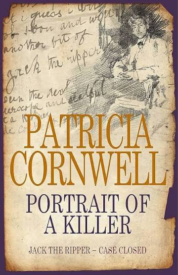

Avec son dernier opus, Patricia Cornwell revient sur le serial killer le plus mythique de l’Angleterre victorienne. Sans preuve irréfutable mais à coup d’indices troublants, l’écrivain annonce sans retenu avoir levé le voile sur l’identité de Jack l’éventreur en la personne de Walter Richard Sickert, peintre anglais du début du 20e siècle.
Enquête psychologique plus que policière, le travail de Cornwell porte dans un premier temps sur une analyse comportementale des deux individus avant d’aborder une étude comparée des toiles du peintre mettant en scène des filles de joies et les photos des victimes prises à la morgue.
C’est ainsi que la spécialiste du polar médico-légal affirme voir en l’œuvre incontestablement morbide de Sickert un aveu de ses crimes. Convaincue de l’exactitude de sa théorie, Patricia Cornwell poursuit son enquête en faisant analyser le papier à lettre du peintre et celui des lettres prétendument envoyées par l’éventreur. Leur origine, semblable, conforte son opinion renforcée par l’étrange analogie entre le pseudo Nemo utilisé par Jack pour signer son courrier et qui fut celui du peintre alors qu’il tentait une carrière d’acteur !
|  |
| Patricia Cornwell, Portrait of a killer : Jack the Rippert Case closed, Little Brown, 2002. |
|
L’éventreur n’a peut être pas fini de nous livrer son terrible secret !
|
||||||||||||||||||||||||||||